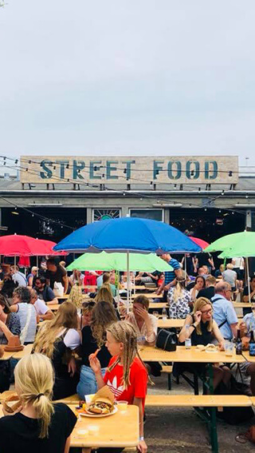
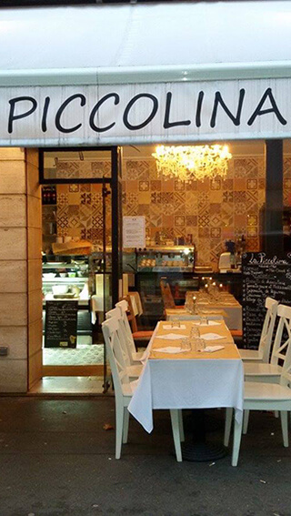
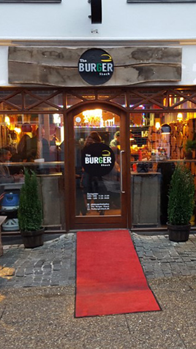
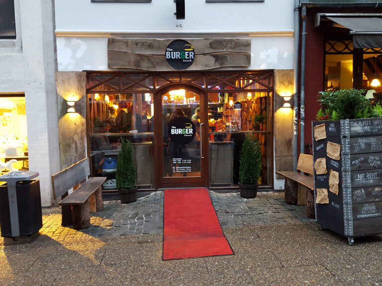

Aarhus Street Food
A nice place where you can meet a lot of different cuisines from all over the world.

About us
Aarhus Street Food is a known place in Aarhus where you can eat various types of food. There are lots of markets, which give locals and tourists in Aarhus the opportunity to enjoy all various kinds of street food from more than 30 street kitchens and bars.
Cuisine
Aarhus Street Food has a huge variety of offers for the customers. There are lots of markets, which give locals and tourists in Aarhus the opportunity to enjoy all various kinds of street food from more than 30 street kitchens and bars.
"Street Food is a food experience everyone should visit in Aarhus. The food is of high quality at all stalls and the ingredients are fresh. All stalls offer specialties that you will have to taste. Also, the price is acceptable for the food they ofer"
Cafe Piccolina
A nice Italian restaurant where you can have a great time eating some real Italian food.

About Us
Cafe Piccolina is a nice Italian local in Aarhus where you can eat some real good pizza and Italian food as well. The local is also known for their good atmosphere. Also, if you are vegetarian, Café Piccolina is the perfect place for you.
Specialities
Specialities
It has a big variety of vegetarian, gluten free, vegan dishes. It is suitable for everyone, so you can come with your friends, your family and have a great time.
At Café Piccolina it is both possible to eat at the café and take the food, and also the café is really good.
"Worth an absolute visit. Really delicious Italian pizzas added Italian glosses and ambiance from the owner and staff. The atmosphere is relaxed and the staff are smiling and sweet. A plus is affordable quality pizzas above. "
The Burger Shack
Here is some information about us, cuisine and what you can find in our local.
 
About Us
The Burger Shack is a place where you can eat really delicious burgers located in the center of Aarhus. The burger here is relatively simple and traditional in its basic form. But it is made for something near perfection.
Dishes
Delicious, light bowl, fine filling, not overtaking, and not least a flame-steak steak, just doing it - just to prove that it's the one that binds the whole burger together! Everything around the steak compliments the taste well, but the "center of attention" is definetly the medium-rare-fried steak that simply spoils your taste buds.
Pomfritters, with the very special blend of parmesan and thyme, are simply heaven! However, there might be more - and even the same amount - dip in the beans, and Coca Cola would like to come back to bed again.
"Worth an absolute visit. Really delicious Italian pizzas added Italian glosses and ambiance from the owner and staff. The atmosphere is relaxed and the staff are smiling and sweet. A plus is affordable quality pizzas above. "